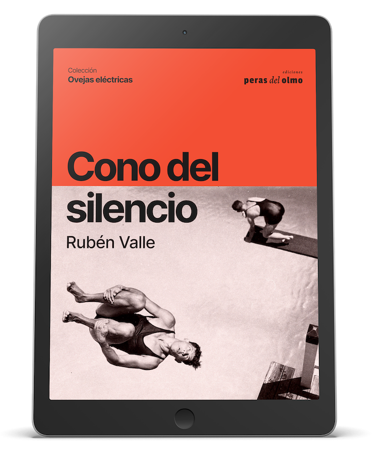

presenta
Cono del silencio
Cono del silencio es el cuarto libro de narrativa
breve del periodista y escritor Rubén Valle. Y en esta
ocasión la consigna sigue siendo la misma que ayer nomás: contar historias
que pasan en la calle, la cabeza, los exoplanetas y a veces en su corazón.
La poesía y el periodismo, viejos aliados del autor, se las ingenian para
ser esa quinta pata que hacen que ni el perro sea perro ni su narrativa
ladre a la par de los gatos altisonantes. Todo esto para decir que nada
está dicho y por eso siempre habrá una excusa para volver a decirlo.
descargar epub
para leer en iBooks, Google Play Libros u otros
descargar mobi
para leer en Kindle
descargar pdf
para leer en otros dispositivos